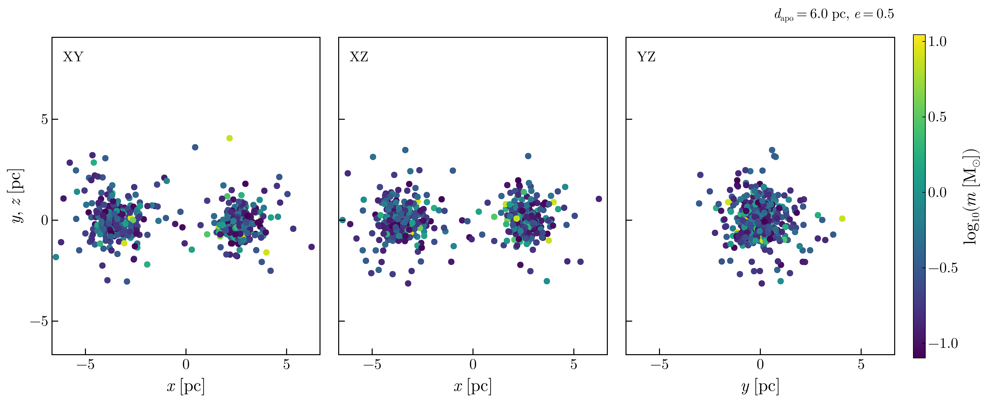
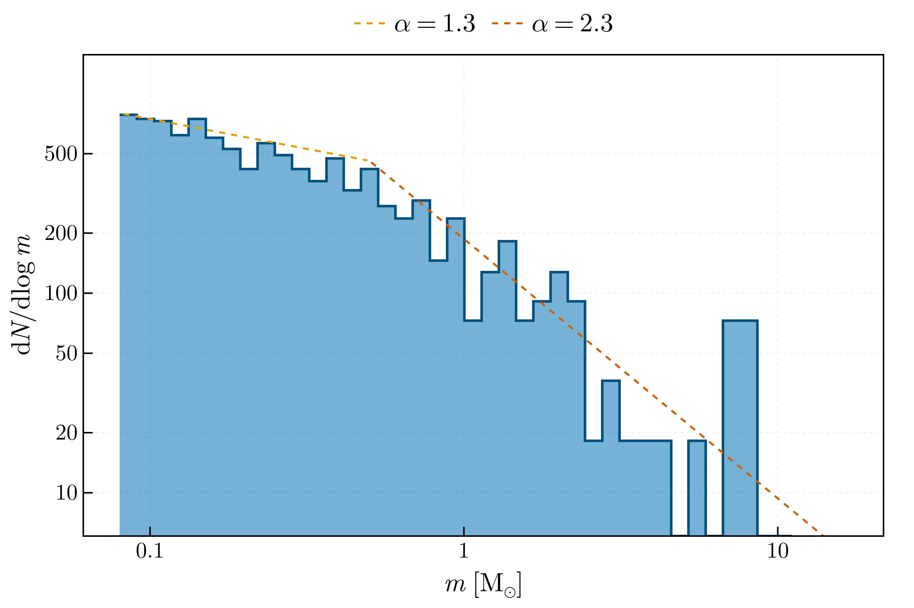

Walkthrough: a two-cluster merger from configuration to initial conditions
This page is generated from docs/src/walkthrough.jl with Literate.jl and executed when the documentation is built. It covers what a merger study needs before the engine runs: the configuration, the generated initial conditions, the derived integration parameters, and the initial-condition figures. The engine itself is not executed here; the user manual covers run_pipeline and the post-processing of a finished run.
using CairoMakie # the figure routines are a package extension; loading a Makie backend brings them into the sessionusing Nbody6DynamicsThe merger configuration
Two Plummer clusters of 300 stars with a Kroupa mass function, released on an eccentric Kepler orbit. Output intervals given in Myr are converted with the realised N-body time unit at generation.
dir = mktempdir()
toml = joinpath(dir, "merger.toml")
write(
toml,
"""
[merger]
seed = 7
n_clusters = 2
orbit_mode = "kepler"
[merger.cluster1]
model = "plummer"
N = 300
rbar = 1.0
imf = "kroupa"
[merger.cluster2]
model = "plummer"
N = 300
rbar = 1.0
imf = "kroupa"
[merger.orbit]
apocentre = 6.0
eccentricity = 0.5
[merger.output]
format = "nbody"
truncate_jacobi = true
output_dir = "$(dir)"
tcrit_myr = 10.0
dtadj_myr = 0.5
deltat_myr = 1.0
""",
)
cfg = load_merger_config(toml)
cfg.clusters[1]ClusterSpec(300, 1.0, PlummerProfile(), KroupaIMF(0.08, 100.0), Float64[], Float64[], BinarySpec(0.0, "random", "kroupa1995", 0.01, 100.0, 0.1, "thermal"))Generating the initial conditions
generate_merger_ic samples each cluster, virialises it, places the pair on the orbit, truncates the members at the Jacobi radius, converts to N-body units and writes dat.10, merger.inp, merger_ic.toml and merger_summary.txt into the output directory.
result = generate_merger_ic(cfg)
(N = result.N_total, M_total = result.M_total, rbar = result.rbar, zmbar = result.zmbar)(N = 575, M_total = 307.01872094853553, rbar = 3.054926544311017, zmbar = 0.533945601649627)Cluster membership is recorded as blocks of body indices, which every per-cluster diagnostic accepts:
length.(result.cluster_ranges)2-element Vector{Int64}:
284
291The engine's input file
The integration parameters are derived from the member clusters (see the Input File Reference). The output intervals are dyadic rationals with an exact decimal expansion, because the engine counts their decimal digits with a loop that never terminates on other values.
print(read(joinpath(dir, "merger.inp"), String))&INNBODY6
KSTART=1,TCOMP=1E+08,TCRTP0=3600,isernb=40,iserreg=40,iserks=0 /
&ININPUT
N=575,NFIX=1,NCRIT=10,NRAND=7,NNBOPT=24,NRUN=1,NCOMM=10,
ETAI=0.02,ETAR=0.02,RS0=0.3273,DTADJ=0.109375,DELTAT=0.220703125,TCRIT=2.20,QE=2.000E-04,RBAR=3.054927,ZMBAR=0.533946,
KZ(1:10)=1 -1 2 0 0 0 3 0 0 0
KZ(11:20)=0 1 0 0 0 0 0 0 3 0
KZ(21:30)=0 2 2 0 0 1 0 0 0 1
KZ(31:40)=0 0 0 0 0 0 0 0 0 0
KZ(41:50)=0 0 0 0 0 0 0 0 0 0
DTMIN=1.425E-04,RMIN=2.805E-03,ETAU=0.1,ECLOSE=1,GMIN=1.000E-06,GMAX=0.01,SMAX=1,
Level='C' /
&INSSE /
&INBSE /
&INCOLL /
&INDATA
ALPHAS=2.35,BODY1=100,BODYN=0.08,NBIN0=0,NHI0=0,ZMET=0.001,EPOCH0=0,DTPLOT=1 /
&INSETUP SEMI=,ECC=,APO=,N2=,SCALE=,ZM1=,ZM2,ZMH,RCUT= /
&INSCALE
Q=0.5,VXROT=0.0,VZROT=0.0,RTIDE=0.0 /Initial-condition figures
The IC plot suite draws the three projections, an overview, the velocity field by cluster, the mass function against the Kroupa reference slopes and the per-cluster density profiles. Here the figures are written next to this page.
vis = VisualizationConfig(;
enabled = true,
format = "png",
dpi = 150,
column = "single",
output_dir = pwd(),
)
plot_merger_ic(result, vis)
filter(f -> startswith(f, "merger_ic"), readdir(pwd()))7-element Vector{String}:
"merger_ic_density.png"
"merger_ic_imf.png"
"merger_ic_overview.png"
"merger_ic_velocity.png"
"merger_ic_xy.png"
"merger_ic_xz.png"
"merger_ic_yz.png"

From here
run_pipeline(load_config("config.toml")) with [merger] enabled = true and config_file pointing at this TOML runs the engine on the generated dat.10, post-processes every output file and draws the figure suite; postprocess_external(dir) does the same for output produced elsewhere.